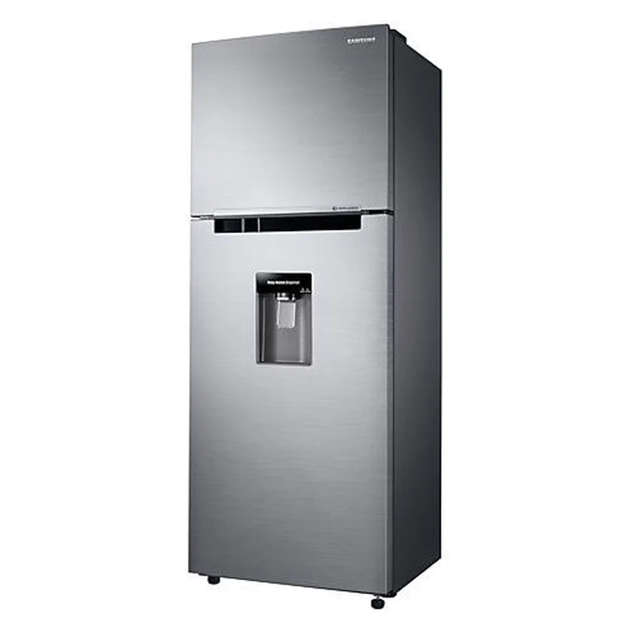

Imágenes de referencia de equipos Samsung.
Qué suele estar pasando
Desagüe de descongelación tapado o congelado, o bandeja de drenaje en mal estado.
Nivel de atención: Revisar pronto
Qué puedes revisar tú
El agua suele acumularse bajo los cajones o en el piso de la nevera.
Desconecta la refrigeradora antes de mover, limpiar o intentar abrir cualquier panel trasero. Si huele a quemado, desenchúfala y no la vuelvas a conectar.
Cuándo llamar al técnico
Conviene que lo revise un técnico en los próximos días. Si sigues usándolo con la falla, el problema puede crecer y la reparación salir más cara.
Qué hacemos en la visita
- Probamos el equipo y reproducimos la falla
- Identificamos la pieza o el sistema que la causa
- Te explicamos el diagnóstico y el costo antes de reparar
- Reparamos y probamos que quede funcionando
Datos que nos ayudan por WhatsApp
Envíanos marca y modelo (la etiqueta suele estar dentro, en el costado o en el techo del compartimento), cuánto tiempo lleva con la falla y si el congelador enfría o no. Si la falla hace ruido, huele o muestra un código, grábala en un video corto.
Guía detallada
Agua dentro de la nevera
Casi siempre es el desagüe de descongelación tapado o congelado. El agua de la descongelación no sale y se acumula bajo los cajones.Agua en el piso
Puede venir de la bandeja de drenaje, de la manguera de agua del dispensador o de la válvula de entrada. Revisa si el charco está al frente (dispensador) o debajo.Qué puedes hacer
Retira alimentos del fondo, seca el agua y verifica que el empaque de las puertas selle. Si tu nevera tiene dispensador, revisa la manguera y el filtro de agua.Cuándo llamar
Si el agua reaparece o hay hielo en el fondo, el sistema de descongelación o el desagüe necesita revisión.Particularidades de Quito
Quito tiene cortes y bajones de voltaje ocasionales; un protector de voltaje con retardo ayuda a cuidar el compresor y la tarjeta electrónica.
Otras fallas de refrigeradora Samsung
- Refrigeradora Samsung: no enfría
- Refrigeradora Samsung: el congelador se llena de escarcha
- Refrigeradora Samsung: hace ruido
- Refrigeradora Samsung: el dispensador no saca agua
- Refrigeradora Samsung: no hace hielo o hace poco
- Refrigeradora Samsung: se enciende la luz del filtro
- Refrigeradora Samsung: se apaga y prende sola
- Refrigeradora Samsung: huele mal por dentro
- Refrigeradora Samsung: la pantalla Family Hub no enciende
- Refrigeradora Samsung: el compresor Digital Inverter hace ruido
Preguntas frecuentes
¿Puedo seguir usando la refrigeradora Samsung mientras tanto?
Puedes usarlo con precaución, pero conviene revisarlo pronto.
¿El técnico lo repara en mi casa en Quito?
Sí. Vamos a tu domicilio, diagnosticamos la falla y te damos el costo antes de reparar. Escríbenos por WhatsApp para coordinar.
¿Qué debo enviarte para que me orientes?
Marca y modelo, una descripción de la falla, tu barrio y, si puedes, una foto de la etiqueta y un video corto del problema.